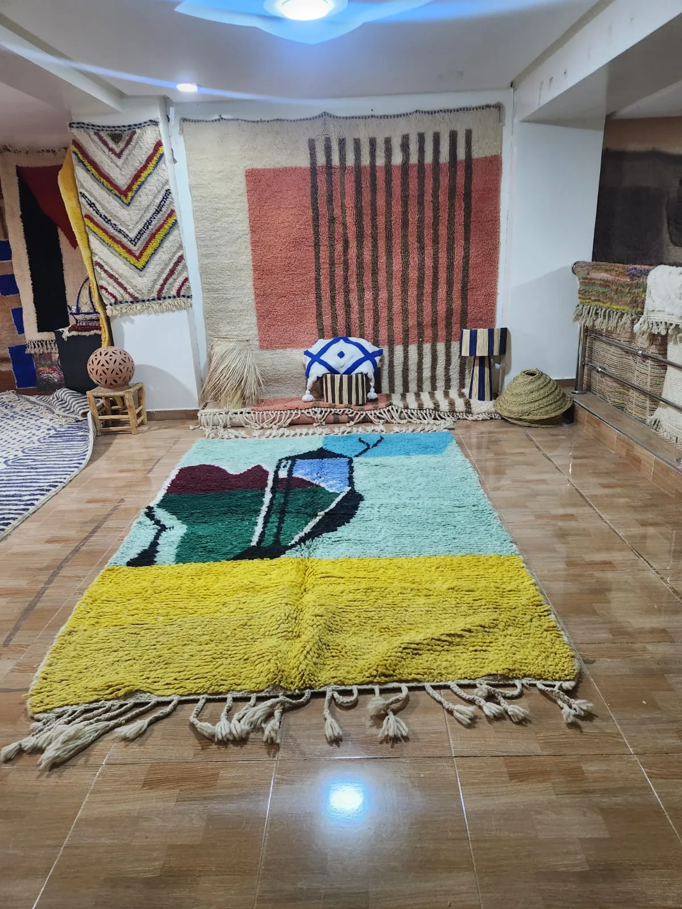

Why it matters
An authentic handmade Moroccan rug is a fundamentally different object from its imitation. It is made from natural wool that took a sheep a year to grow, hand-spun by a woman who may have been spinning wool since childhood, hand-knotted by someone who tied each individual knot one at a time — often over months. It will last fifty years or more if cared for correctly. It carries the symbolic language of a specific tribe and region.
A machine-made imitation is made in hours from synthetic fibre on an automated loom in China or India. It will wear thin within five years, flatten under foot traffic, and shed continuously. It is not a rug in the same sense — it is a mat that looks like one in a photograph.
The price gap between the two can be significant, which is exactly why fakes exist and why knowing the difference protects you.
"Legitimate sellers provide detailed information about where their rugs come from and who made them — and are happy to answer questions."
7 signs of an authentic Moroccan rug
- The back tells the truth. Flip the rug over. An authentic hand-knotted rug shows rows of individual knots on the back — small, slightly irregular bumps forming the pattern in reverse. A machine-made rug has a uniform, perfectly even latex or canvas backing. If you see a latex backing, it was not hand-knotted.
- Imperfection is the hallmark. Genuine Berber rugs have slight irregularities — lines that waver fractionally, patterns that are not perfectly symmetric, pile height that varies slightly across the surface. These are not defects. They are proof of a human hand. Machine-made rugs are perfectly uniform, because machines have no imperfections.
- The fringe grows from the rug. On an authentic rug, the fringe is the natural continuation of the warp threads that form the rug's structure. It is an integral part of the rug. On machine-made rugs, fringe is usually sewn or glued on as a decorative addition — you can often feel or see where it is attached.
- Wool feels like wool. Natural sheep's wool is soft, slightly lanolin-rich (a natural grease), warm to the touch and has a subtle sheen. Synthetic fibres feel uniform, slightly plasticky, and often have an artificial lustre. If it feels like a fleece jacket, it is synthetic.
- Weight. Pick up one end of the rug. A hand-knotted wool rug is heavy — the dense pile and solid wool foundation give it real mass. A thin, light rug almost certainly has a thin pile with synthetic fibre on a lightweight backing.
- The seller can tell you its story. An authentic rug has a provenance — the region, the tribe, the type of rug, ideally the weaver. A seller who cannot tell you anything beyond "handmade Moroccan rug" either does not know or does not want you to know. Both are red flags.
- The price is coherent. A genuine hand-knotted Moroccan rug in a medium size (150 × 200 cm) takes weeks or months to make and must travel from Morocco to you. The minimum realistic price for an authentic piece is around £350–400. Significantly below that, it is not what it claims to be.

4 red flags to avoid
- "Handmade" does not always mean hand-knotted. A rug can be "handmade" and still be tufted (punched through a canvas with a mechanical gun) rather than hand-knotted. Tufted rugs have a felt or canvas backing to hold the pile in place, and they shed heavily. Always ask specifically: "Is this hand-knotted?"
- Overly saturated, uniform colours. Traditional Moroccan rugs use natural dyes — plant-based and mineral — that produce rich but slightly varied tones. If the colours look excessively bright, perfectly uniform, or chemically vivid across the entire rug, they are almost certainly synthetic dyes applied to synthetic fibres.
- Prices that are impossible. If a 200 × 300 cm "handmade Moroccan rug" is £89, it cannot be what it claims. At that price, the materials alone (wool, dyes, labour) are not covered. Be especially wary of this on large marketplace platforms where mass listings dominate.
- A seller who is vague or evasive about origin. "Made in Morocco" on its own tells you very little — Morocco has factories that produce machine-made rugs at scale. What matters is hand-knotted, by artisans, in a specific region. A confident, legitimate seller is never vague about this.
Questions to ask any seller before you buy
These five questions will tell you almost everything you need to know:
- Is this rug hand-knotted?
The answer should be a confident yes, with an explanation of the knotting technique. Vagueness suggests it may be tufted or woven instead.
- Which region of Morocco is it from?
You should get a specific answer — High Atlas, Middle Atlas, Azilal province, Beni Ourain territory. "Morocco" on its own is not enough.
- What materials is it made from?
Natural wool (sheep, sometimes camel or goat), natural dyes from plants and minerals, cotton warp threads. Any mention of acrylic, polyester or synthetic fibre should end the conversation.
- Do you know who made it?
The best sellers can give you a weaver's name, village or cooperative. This is not always possible for older vintage rugs, but for new stock it should be. A seller who sources directly from artisans will always know.
- What is your returns policy?
A seller confident in their product offers clear, unconditional returns. A vague or restrictive returns policy on a high-value item is a warning sign.
Every Tiziri rug is sourced directly from Berber artisans. We tell you the region, the tribe, and — wherever possible — the weaver.
Browse the CollectionOur guarantee to you
At Tiziri, every rug we sell is hand-knotted or hand-woven by Berber artisans in Morocco. We source directly — no intermediaries, no middlemen. We can tell you the region each rug comes from, the technique used, and the materials. Where we know the weaver, we tell you.
If you receive a rug and have any doubt about its authenticity, contact us. We will answer every question and, if you are not satisfied, arrange a return — no argument, no conditions.
If you would like more information about a specific piece before buying, contact us directly. We are always happy to share more detail than is on the product page.